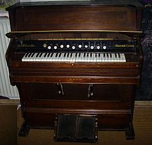
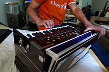
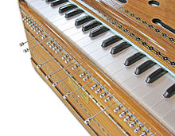

A harmonium is a keyboard instrument similar to an organ. It blows air
through the air vessels (reeds), producing musical notes. The
22-Shruti-Harmonium can also produce the sound of an accordion.
The Harmonium was invented in Europe at Paris in the year 1842 by Alexandre
Debain, though there was concurrent development of similar instruments
elsewhere.
There are two sorts of harmonium. In a foot-pumped harmonium, the player pumps a
foot pedal which operates a bellows that sends the air to the reeds.

A hand-pumped harmonium has a hand bello ws that blows the air. It was created by
Dwakranath Ghose specifically allowing the instrument to be played in the
sitting position as required in India. It is used in India, Pakistan, Nepal,
Afghanistan and in other Asian countries.
In a foot pumped harmonium, both hands
are free to use the key board. In a hand-pumped harmonium, only one hand can be
used on the keys as the other remains busy on the bellows. Very skilled players
pump enough air with one hand, and can play the keys with both hands, when
necessary.
It is used as an accompanying instrument in Hindustani classical
music, Sufi Music, Bhajan and other Devotional Music, Qawwali, Natya Sangeet,
and a variety of genres including accompaniment to Classical Kathak Dance.
Nomadic singers string it and wear it around their shoulders taking part in
village fairs and festivals.

Harmonium with a Swarmandal (a small, harp-like instrument, similar to Zither
and Autoharp) was produced by Bhishmadev Vedi. As the Swaramandal box was too
big for the Harmonium, his disciple Manohar Chimote fixed the strings within the
breadth of the instrument naming it as ‘Samvadini’.
This instrument allows the
strings to be played by the hand on the bellows, and keys by the other hand.
Chimote provided a new natural ‘Gandhar’ tuning in this Harmonium. Although this
tuning was limited to the 12 tones versus the 22 required in Hindustani
classical music, it surely gave the European tuning of the Harmonium, an Indian
flavour.

22-Shruti-Harmonium was created by Vidyadhar Oke (Indian Patent No. 250197). To
achieve this, he first clarified the essential difference between 'Nada' and
'Shruti' and pinpointed the positions to play the 22 Microtones (Shrutis) on any
string instrument. He documented the specific difference between 22 Shrutis
versus the 12-Tone Equal temperament Scale.
His 22-Shruti-Harmonium provides
special knobs below each of the keys to regulate the reeds, making 22 Shrutis
available within 12 keys. As this is a modified hand-pumped harmonium, no
special playing skill is necessary. The 22-Shruti-Harmonium enables the creation
of any Raga with all the notes perfectly consonant with a Tanpura. Additionally,
by positioning all the knobs in the central position, the 22-Shruti-Harmonium
can produce the sound of an Accordion.